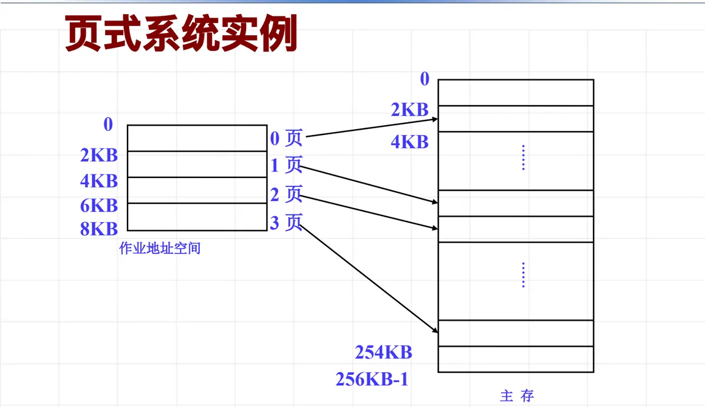
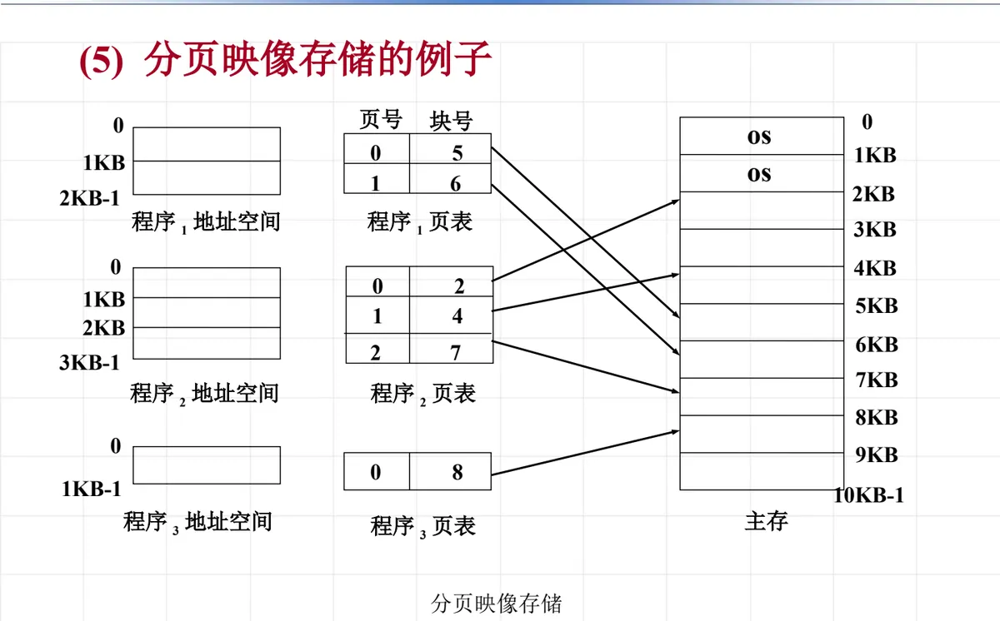
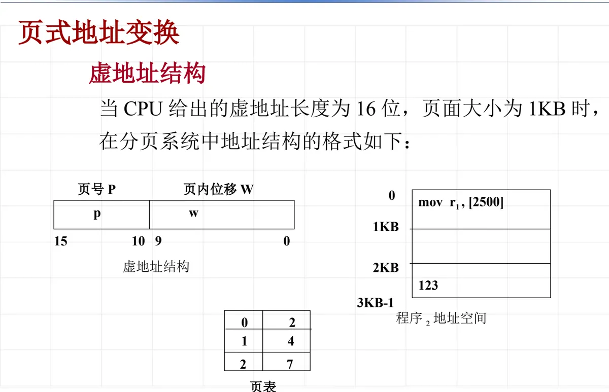
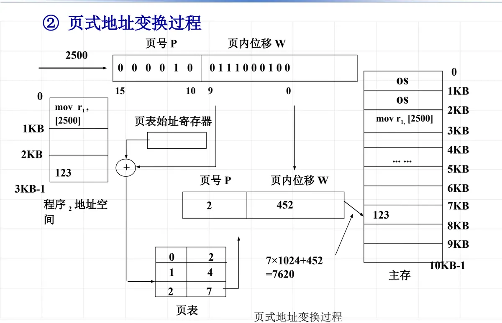
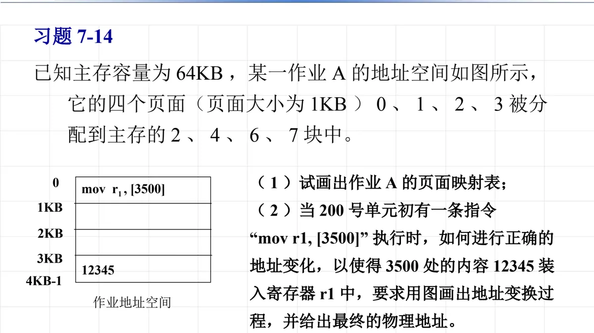
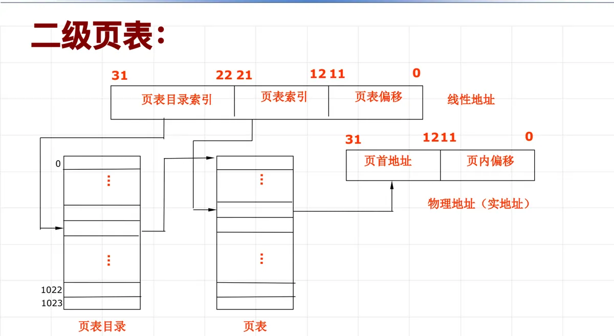
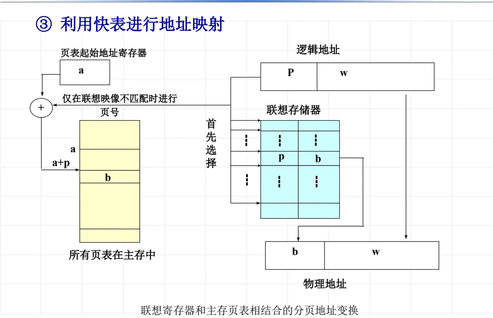
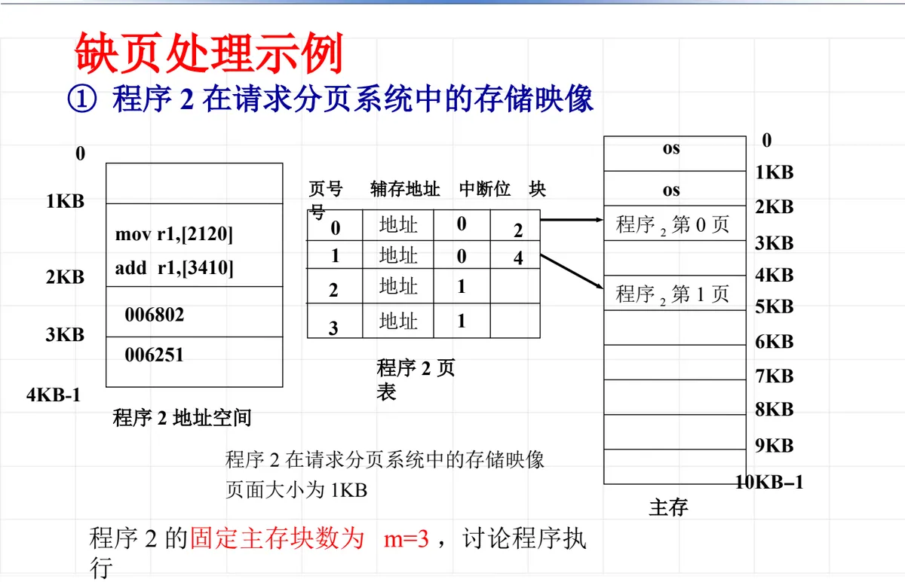
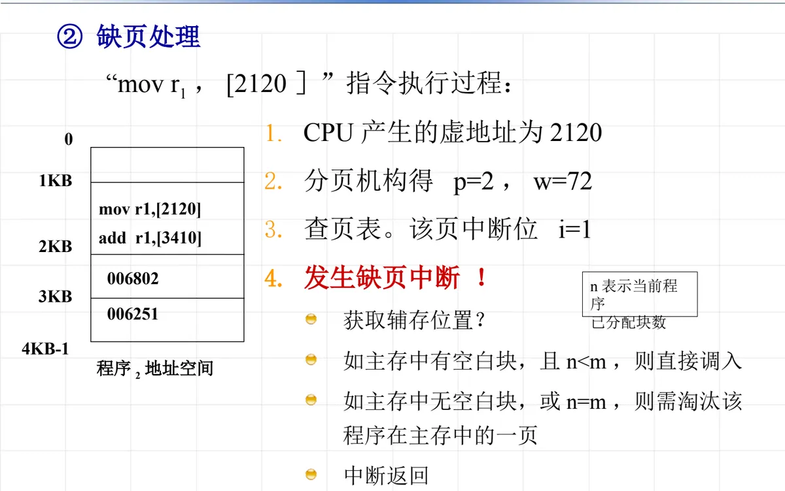
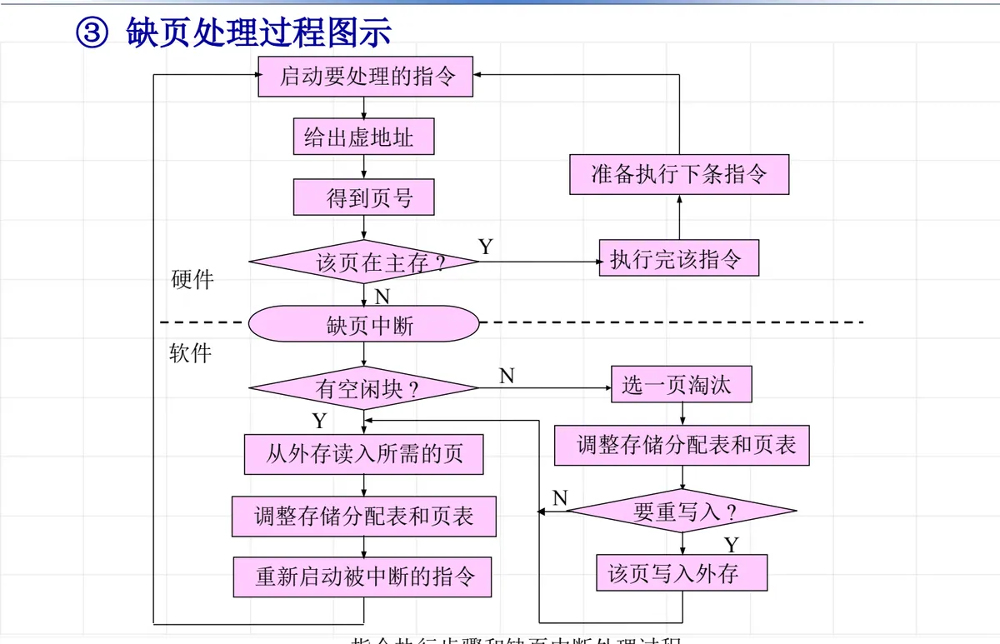

操作系统原理 · 第 7 章 主存管理
7.4 页式存储管理
这一节讲页式存储管理，它是主存管理里被最广泛采用的一种方式，也是后面 7.5 节页面置换算法、7.6 节段页式管理的基础。思路是三步：先说清楚它要解决的两个老问题——分区存储留下的碎片，以及「作业必须整个装进主存」的硬约束；再看它用「等分 + 页表」这套办法怎么把问题绕开；最后落到实现细节：地址怎么变换、页表怎么查得快、程序只装一部分时缺页怎么办。
1. 页式管理要解决的两个问题
先说碎片。在 7.3 节的分区存储管理里，用户要求分配的逻辑地址是一个连续的范围，系统就必须在主存里找到一块同样连续的空闲区给它。当主存中现有的空闲区大小都小于要求分配的大小时，这些装不下任何作业的空闲区就是碎片（也叫零头）。碎片不是「内存不够用」，而是「剩下的空闲区都被切得太碎了，拼不出一个够大的连续块」。
对付碎片，分区管理里有一个办法叫拼接（紧凑）：把主存里所有在跑的作业挪到一起，让零散的空闲区并成一大块。但拼接要搬动大量数据、要暂停作业、还要改所有相关的地址，代价太大，不能作为常规手段反复使用。所以要寻找新路径：能不能避开程序对地址连续性的要求，让一个程序分散地放到若干块互不相邻的区域里去？这正是分页的思想。
再说不必全部装入的问题。分区存储管理有一个硬约束：作业的地址空间必须能整体装进主存可用空间，否则这个作业根本无法投入运行——主存有多大，能同时跑的作业就有多小。于是很自然地要问：能不能不必把程序地址空间全部装入主存，而只把当前所需的一部分内容装入？程序运行过程中需要用到别的内容时，由操作系统和硬件配合，自动地从辅存把所需内容调入主存。做到这一点，主存就被「扩充」了：小主存也能跑大程序。
这两条需求合起来，就是页式存储管理的出发点。分页存储是一种比较完美的内存管理方式，因此被广泛采用。
2. 页式系统的基本概念
（1）分页
分页的做法是「两边等分」：
- 程序的虚拟地址空间被等分成大小相等的片，称为页面，又称为虚页；
- 物理内存也被等分成同样大小的片，称为主存块，又称为实页。
注意这里的关键词是「等分」：分的时候不管程序本身的结构，也不管它原来是一段代码还是一段数据，一律按固定大小切开。切出来的页面是逻辑上的划分，主存块是物理上的划分，两者大小完全一样。
（2）动态映射
既然虚页和实页大小一样，一个虚页就可以整块地放进任意一个空闲的主存块。于是：连续的虚页可以被映射到不连续的实页——程序在逻辑上仍然是一段连续的地址空间，在物理上却可以分散地摆在主存的各个角落。碎片问题就此解决：主存里只要还有够一个页面大小的空闲块，就能装东西，不需要凑出一个大连续区。
动态映射还带来第二个好处：程序开始运行时，只需要把部分页面装入主存块，也就是说程序可以部分装入就投入运行，其余页面在运行过程中按需加载。这正好对应前面「主存扩容」的需求。

3. 页式系统需要解决的问题
把「等分 + 映射」这个想法落地，系统必须回答三个问题，它们也构成了本节后半部分和下一节的内容线索：
- 地址映射：逻辑地址里的「页」怎么换成物理主存里的「块」？这既要给出方法，也要考虑效率；
- 请调机制：要能判断当前访问的页面是否已经在内存中；如果不在内存，又该如何处理；
- 淘汰策略（置换算法）：主存已满而又有新页面要调入时，该把哪一页换出去。这一条正是 7.5 节的主题。
4. 地址映射与页表
先看第一个问题的「方法」。既然一个虚页可能被装到任何一个主存块里，系统就必须记录下「哪个虚页在哪一块」的对应关系。为了实现从逻辑地址空间到物理主存的映像，系统建立的一种记录页与内存块之间对应关系的地址变换机构，称为页面映像表，简称页表。
页表是每个作业（进程）一张的，表中的每一项对应程序的一个页，写明该页被分配到的主存块号。程序运行时的页表由操作系统建立和维护，硬件在地址变换时直接查它。

看图 2 可以直观地理解页式管理「分散存放」的特点：每个程序在逻辑上都是连续的一段地址空间，但它们的页在主存里交错分布、互不相邻。程序自己看不到这种交错——它给出的仍然是连续的虚地址，由页表在背后完成转换。
5. 页式地址变换：从虚地址到物理地址
（1）虚地址的结构
页式系统里，一个逻辑地址被分成两部分：高位是页号 P，低位是页内位移 W（也称页内偏移、页内相对位移）。这个划分不是人为约定，而是由页面大小决定的：页面大小是 2 的整数次幂时，页内位移正好占低位若干位，剩下的高位就是页号。图 3 所示的结构里，1KB 的页面意味着页内位移占低 10 位（210 = 1024），页号占高位部分。

（2）变换过程：一个具体例子
设页面大小为 1KB，程序 2 中有一条指令要访问地址 2500，页表里第 2 页对应的块号是 7。变换过程如图 4：
- 分页机构把 2500 一分为二。2500 ÷ 1024 = 2 余 452，所以页号 p = 2，页内位移 w = 452；
- 以页号 2 为索引，结合页表始址寄存器指示的页表起始地址，在页表中找到第 2 页的项，读出主存块号 b = 7；
- 把块号 b 和页内位移 w 拼起来，就得到访问主存的物理地址：7 × 1024 + 452 = 7620。

（3）页式地址变换步骤
把上面的过程写成通用的四步：
- （1）CPU 给出操作数地址（上例中为 2500）；
- （2）由分页机构自动地把逻辑地址分为两部分，得到页号 p 和页内相对位移 w（p = 2，w = 452）；
- （3）根据页表始址寄存器指示的页表起始地址，以页号为索引，找到第 2 页所对应的块号（为 7）；
- （4）将块号 b 和页内位移量 w 拼接在一起，形成访问主存的物理地址（7 × 1024 + 452 = 7620）。
这四步里最值得记住的一点是：页内位移 w 自始至终没有变过。它只参与「分」和「拼」，不参与查找。正因为如此，一个页被搬到主存的哪一块都不影响页内各字节的相对位置，程序感觉不到自己被拆散过。
6. 课堂练习：习题 7-14
课件在这里安排了一道练习，用来检验地址变换是否真的掌握了：
- （1）试画出作业 A 的页面映射表；
- （2）当 200 号单元处有一条指令
mov r1, [3500]执行时，如何进行正确的地址变换，以使得 3500 处的内容 12345 装入寄存器 r1 中？要求用图画出地址变换过程，并给出最终的物理地址。
题目给出的装入情况是：主存容量 64KB，作业 A 的地址空间按 1KB 分页，共 4 页（0、1、2、3），分别被分配到主存的 2、4、6、7 号块中；200 号单元处是一条访问 3500 号单元的指令，3500 处存放着数据 12345（图 5）。
第（1）问的页面映射表按装入情况直接写出：
| 页号 p | 主存块号 b |
|---|---|
| 0 | 2 |
| 1 | 4 |
| 2 | 6 |
| 3 | 7 |
第（2）问沿用小节 5 里的三步。先分：页面大小为 1KB，3500 = 3 × 1024 + 428，所以这条指令访问的是第 3 页、页内位移 w = 428；再查：由上面的映射表，第 3 页装在主存的第 7 块；后拼：物理地址 = 7 × 1024 + 428 = 7596。可见被中断的只是「3500」这个逻辑地址，页内位移 428 在变换前后没有变，变的只有「哪一块」。

7. 二级页表
页表本身也要占用主存。一个作业的地址空间越大、页面越小，页表项就越多，页表也就越大——大到它自己也需要被分割、按需装入时，就出现了二级页表。
图 6 给出的结构是：线性地址被分成三段，高位是页表目录索引，中间是页表索引，低位是页内偏移。查找时分两步走：先用页表目录索引在页表目录里找到对应的那张页表（图中页表项的编号 0～1023），再用页表索引在那张页表里找到该页的页首地址；最后把页首地址与页内偏移拼起来，得到物理地址（实地址）。

8. 效率分析与快表
页表法解决的是「能不能映射」的问题，接下来要解决「快不快」。麻烦在于：页表本身也存在主存里。要访问一个数据，硬件必须先读一次主存去取页表项、拿到块号，然后再读一次主存去取真正要的数据。所以每次读写一个数据至少需要访问 2 次内存，执行速度下降 100%——访存开销翻了一倍，这是不能接受的。
怎么办？办法是在地址变换这条路上加一层特殊的高速缓冲存储器——联想存储器，专门用来存放页表里最近用到的那些项。
- 什么是联想存储器：一种高速、小容量的半导体存储部件，又称高速缓冲存储器。它可以按内容并行比较，而不像普通内存那样只能按地址逐项查找；
- 什么是快表：在高速缓冲存储器中存放正在运行的进程当前用到的页号和对应的块号，这样的部件又称为快表。

用了快表以后，地址变换的路径变成：页号先进联想存储器比对，命中就直接拿到块号，把它和页内位移拼成物理地址——全程只访问一次主存（取数据那一次）；只有没命中时，才回过头去查主存里的页表。因为程序访问页面有很强的局部性，快表的命中率可以做得非常高。
课件给了一组具体数字来量化收益：假定访问主存时间为 100 微秒，访问联想存储器时间为 10 微秒，联想存储器为 32 个单元时快表命中率可达 99%，则按逻辑地址存取的平均时间为
(100 + 10) × 99% + (100 + 100) × (1 − 99%) = 111 微秒而不用快表、老老实实两次访问主存的时间为
100 × 2 = 200 微秒也就是说，平均每次访存从 200 微秒降到 111 微秒，几乎省掉了一次完整的访存。代价是联想存储器容量很小（只有几十项），所以它只装得下「当前用到的」那些页表项，换来的是绝大部分访问都走捷径。
9. 内存扩充：程序部分装入与请求分页
回到本节开头提出的第二个需求：主存能不能只装程序的一部分？页式管理给出的答案是肯定的——只装入一个作业的部分页面即可投入运行，同时系统为该作业事先分配固定数目的主存块（比如 m 块），这个数目在整个运行期间不变。
在程序执行过程中，如果需要执行的指令或访问的数据尚未在内存（这种情况称为缺页），则由处理器通知操作系统将相应的页或段调入到内存，然后继续执行程序。程序本身并不知道自己的一部分还躺在辅存里，这一层由硬件和操作系统替它兜住。
要做到这一点，必须给页表扩充功能。原来的页表只有「页号 → 主存块号」，现在要再加两项：
扩充后的页表项有四个字段：页号、主存块号、中断位、辅存地址。已经装入主存的页，主存块号有值、中断位为 0；还留在辅存的页，主存块号为空，中断位为 1，辅存地址栏则记着它在辅存中的位置。
- 中断位 i：标识该页是否在主存。若 i = 1，表示此页不在主存；若 i = 0，表示该页在主存；
- 辅存地址：该页面在辅存中的位置。缺页时，系统就按这个地址去辅存把页读进来。
10. 缺页处理示例
（1）程序 2 在请求分页系统中的存储映像
课件用一个完整的例子把缺页处理串了一遍。设页面大小为 1KB，程序 2 的固定主存块数 m = 3，程序中有两条指令：
mov r1, [2120]
add r1, [3410]程序 2 的地址空间被分成若干页，其中一部分已装入主存，另一部分还留在辅存；页表里同时记着中断位、块号和辅存地址，如图 9。

（2）缺页处理
现在执行 mov r1, [2120]，处理过程如下：
- CPU 产生的虚地址为 2120；
- 分页机构将其分为页号和页内位移：2120 ÷ 1024 = 2 余 72，得 p = 2，w = 72；
- 查页表，该页的中断位 i = 1，说明这一页并不在主存；
- 发生缺页中断！——处理器把控制权交给操作系统；
- 获取辅存位置：按页表里记录的辅存地址，找到该页在辅存中的存放位置；
- 如主存中有空白块，且 n < m，则直接调入（n 表示当前程序已分配的块数，m 是它固定的主存块数）；
- 如主存中无空白块，或 n = m，则需淘汰该程序在主存中的一页，腾出块来再调入；
- 中断返回：操作系统改好页表和存储分配表，重新执行刚才被中断的那条指令，此后访问 2120 就能在主存里正常完成了。

（3）缺页处理过程图示
把上面的动作画成流程图，就是图 11。它把「指令执行」和「缺页中断处理」两条线索交织在一起，注意其中的硬件与软件分工：
- 硬件负责：启动要处理的指令 → 给出虚地址 → 得到页号 → 判断该页是否在主存；命中则执行完该指令，再准备执行下条指令；
- 软件（操作系统）负责：缺页中断发生后，先看主存有没有空闲块——有则直接从外存读入所需的页；没有则先选一页淘汰，若要重写（被淘汰的页被修改过）还需先把它写回外存；然后从外存读入所需的页，调整存储分配表和页表；
- 最后重新启动被中断的指令，从刚才失败的那一步重来一遍，程序对此毫无察觉。

本节小结
- 页式管理要解决两个老问题：分区存储的碎片（连续空闲区凑不出来，拼接代价太大）和「作业必须整体装入主存」的硬约束（小主存跑不了大程序）；
- 基本手段是两边等分 + 动态映射：虚拟地址空间等分成页面（虚页），主存等分成主存块（实页），连续的虚页可以映射到不连续的实页，程序部分装入也能运行；
- 要落地必须解决地址映射、请调机制、淘汰策略三件事，其中淘汰策略（页面置换算法）是下一节的内容；
- 地址变换靠页表：虚地址分成页号 P 和页内位移 W，查页表得块号 b，物理地址 = b × 页面大小 + W；页内位移在变换中始终不变（例：2500 → p=2、w=452，块号 7，物理地址 7620）；
- 页表本身也在主存里，直接查表要两次访存、速度下降 100%，所以引入联想存储器（快表）：命中率 99% 时平均访存由 200 微秒降到 111 微秒；地址空间很大时还可用二级页表（页表目录 + 页表）分级存放；
- 支持部分装入要扩充页表：增加中断位 i（i = 1 不在主存，i = 0 在主存）和辅存地址；缺页时由缺页中断进入操作系统，有空闲块就调入，没有就淘汰一页再调入，最后重启被中断的指令。